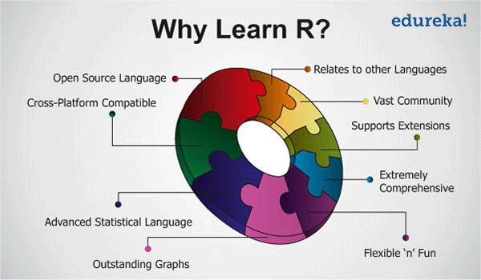
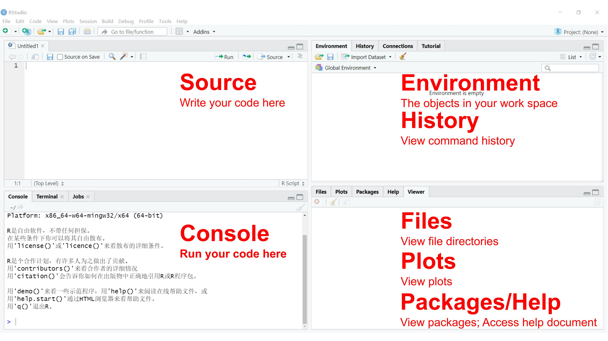
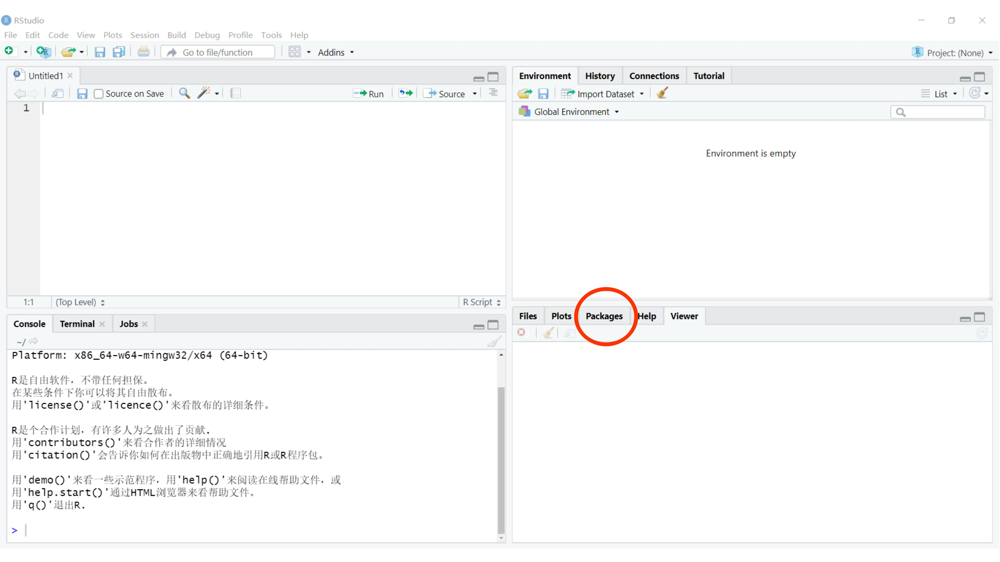

R
tutorial1. Have you taken any statistics course before?
2. Do you use the following languages for data analysis?
MATLABPythonRIDL3. What do you use for data visualization?
MATLABPythonRIDLOrigin4. On a scale of 0 (not any) to 10 (sophisticated), how to describe your programming experience?
5. What is your laptop’s operating system (OS)?
6. Name one thing you want to achieve at the end of the semester (open question)
This course is designed for ESE undergraduates having no or weak data
analysis background, with emphasis on R.
Good reasons for not taking the course:
C,
C++, Java, MATLAB,
Python, IDL, etc.)Bad reasons for not taking the course:
R languageR is the leading tool for statistics, data analysis, and
machine learning. It is more than a statistical package; it’s a
programming language, so you can create your own
objects, functions, and packages.
Academics and statisticians have developed R over two
decades. R now has one of the richest ecosystems to perform
data analysis. There are around 16000 packages
available in CRAN (Comprehensive R
Archive Network). It is possible to find a library for
whatever the analysis you want to perform. The rich
variety of libraries makes R the first choice for
statistical and data analysis. R also makes communicating
the findings with a presentation, document, or website very easy.
The following figure summaries important reasons for learning
R:

Follow instructions to install RStudio.
The RStudio IDE (Integrated Development Environment) is the most
popular integrated development environment for R. It allows
you to write, run, and debug your R code.

Check this cheat sheet (may need VPN) for more features and shortcuts of the RStudio IDE.
The notes below are modified from the excellent online R tutorial freely available on the Software Carpentry website.
R tutorialR as a calculatorThe simplest thing you could do with R is to do
arithmetic. Let try this in the Console window:
## [1] 3R will print out the answer with a preceding
## [1] (my PC) or [1] (your laptop). Don’t
worry about this for now, we will explain that later. For now, think of
it as indicating output.
You will find the spaces have no impact on the result.
## [1] 3When using R as a calculator, the order of operations is
the same as you would have learned back in school. From highest to
lowest precedence:
(, )^ or ***/+-Let’s try
## [1] 7## [1] 9## [1] 27Always think about clarifying your intentions, as others may later
read your code. Here we call such intentions as comments.
Anything that follows after the hash symbol # is ignored by
R when it executes code.
## [1] 10Really small or large numbers get a scientific notation:
## [1] 2e-04You can write numbers in scientific notation too:
## [1] 5e+10## [1] 5320000R has many built-in mathematical functions. To call a
function, we can type its name, followed by open and closing parentheses
(). Anything we type inside the parentheses is called the
function’s arguments:
## [1] 0.841471## [1] 1## [1] 2.302585## [1] 1## [1] 1.648721Don’t worry about trying to remember every function in
R. You can look them up online, or if you can remember the
start of the function’s name, use the Tab completion in
RStudio.
This is one advantage that RStudio has over R on its
own; it has auto-completion abilities that allow you to more
easily look up functions, their arguments, and the values that they
take. In fact, the auto-completion abilities do not limit to functions,
but also to variables.
Typing a ? before the name of a command will open the
help page for that command. When using RStudio, this will open the
Help window. The help page will include a detailed
description of the command and how it works. Scrolling to the bottom of
the help page will usually show a collection of code examples that
illustrate command usage. We will go back to how to get help later in
this section.
We can also do comparisons in R:
## [1] TRUE## [1] TRUE## [1] TRUE## [1] TRUE## [1] TRUE## [1] TRUEA word of warning about comparing numbers: you should never use
== to compare two numbers unless they are integers (a data
type which can specifically represent only whole numbers).
We can store values in variables using the assignment operator
<-, like this:
Notice that the assignment does not print a value. Instead, we stored
it for later in something called a variable. x now
contains the value 0.01:
## [1] 0.01Remember, you can always print a variable (in fact, anything) using
the function print():
## [1] 0.01## [1] "Hello World"You can also assign a character to a variable
## [1] "SUSTech"Look for the Environment window from the top right
panel of RStudio, and you will see that x and its value
have appeared. Our variable x can be used in place of a
number in any calculation that expects a number:
## [1] -2Notice also that variables can be reassigned:
x used to contain the value 0.01, and now
it has the value 100.
Assignment values can contain the variable being assigned to:
The right-hand side of the assignment can be any valid R
expression. The right-hand side is fully evaluated
before the assignment occurs.
Variable names can contain letters, numbers, underscores, periods, but no spaces. They must start with a letter or a period followed by a letter (they cannot start with a number nor an underscore). Variables beginning with a period are hidden variables. Different people use different conventions for long variable names. Whatever you use is up to you, but be consistent.
One thing to be aware of is that R is
vectorized, meaning that variables and functions can have
vectors as values. In contrast to physics and mathematics, a vector in
R describes a set of values in a certain
order of the same data type. For example:
## [1] 1 2 3 4 5 6 7 8 9 10## [1] 2 4 8 16 32 64 128 256 512 1024## [1] 2 4 8 16 32 64 128 256 512 1024This is incredibly powerful; we will discuss this further in an upcoming section.
There are a few useful commands you can use to interact with the
R session.
ls() will list all of the variables and functions stored
in the global environment (your working R session):
## [1] "AQI" "AQI1" "AQI2" "Check_Air_Quality" "Daily_T" "Day" "Forecast_List" "Hour" "Hourly_T" "Keeling_Data" "Keeling_Data_tbl" "Month_CO2" "MyName"
## [14] "Output_List" "Output_Matrix" "Output_Matrix2" "sample1" "sample2" "score" "scores" "Temp_Value" "x" "y" "z"Note here that we didn’t give any arguments to ls(), but
we still needed to give the parentheses () to tell
R to call the function.
You can use rm() to delete objects you no longer
need:
## [1] "AQI" "AQI1" "AQI2" "Check_Air_Quality" "Daily_T" "Day" "Forecast_List" "Hour" "Hourly_T" "Keeling_Data" "Keeling_Data_tbl" "Month_CO2" "MyName"
## [14] "Output_List" "Output_Matrix" "Output_Matrix2" "sample1" "sample2" "score" "scores" "Temp_Value" "y" "z"## [1] "AQI" "AQI1" "AQI2" "Check_Air_Quality" "Daily_T" "Day" "Forecast_List" "Hour" "Hourly_T" "Keeling_Data" "Keeling_Data_tbl" "Month_CO2" "Output_List"
## [14] "Output_Matrix" "Output_Matrix2" "sample1" "sample2" "score" "scores" "Temp_Value" "z"Often when we are coding, we want to control the flow of our actions. This can be done by setting actions to occur only if a condition or a set of conditions are met. Alternatively, we can also set an action to occur a particular number of times.
There are several ways you can control flow in R. For
conditional statements, the most commonly used approaches are the
if and else constructs.
Given today’s AQI (Air Quality Index) value, suppose we want to write
a piece of code to check whether the Air Quality is excellent (AQI <=
50) or not.
Open a new R script
(File -> New File -> R Script), and you should see a
new panel in your RStudio. Type the following lines in the script, and
save it. Select the lines you want to run, there are two ways to do
so:
Ctrl+EnterRun then Run Select Line(s) from the
top-right of the Script window.AQI <- 69
# If this condition is TRUE
if (AQI <= 50) {
# Do the following
print("Air Quality is Excellent")
}The print statement does not appear in the console
because AQI is larger than 50. To print a
different message for numbers larger than 50, we can add an
else statement.
# If this condition is TRUE
if (AQI <= 50) {
# Do the following
print("Air Quality is Excellent")
# If this condition is FALSE
} else {
print("Air Quality is NOT Excellent")
}## [1] "Air Quality is NOT Excellent"You can also test multiple conditions by using
else if.
if (AQI <= 50) {
print("Air Quality is Excellent")
} else if (AQI <= 100) {
print("Air Quality is GOOD")
} else {
print("Air Pollution!")
}## [1] "Air Quality is GOOD"Change AQI to 40, 80, and
120, check the ouput.
Important: when R evaluates the
condition inside if() statements, it is looking for a
logical element, i.e., TRUE or FALSE.
This can cause some headaches for beginners. For example:
## [1] "4 does not equal 3"We can use logical AND && and OR ||
operator for more than one condition:
## [1] "Air Quality is Good"Change AQI to 40, 80, and
120, check the ouput.
AQI1 <- 69
AQI2 <- 140
if (AQI1 <= 100 || AQI2 <= 100) {
print("There is at least 1 site with a GOOD air quality")
}## [1] "There is at least 1 site with a GOOD air quality"Change AQI1 to 40, 80, and
120, check the ouput.
You probably have realized it’s really tedious to change the AQI variables. It would be really helpful to define a function that handles different inputs automatically.
A function is a set of statements organized together to perform a
specific task. R has a large number of in-built functions
and the user can create their own functions. In R, a
function is an object so the R interpreter is able to pass
control to the function, along with arguments that may be necessary for
the function to accomplish the actions. The function in turn performs
its task and returns control to the interpreter as well as any result
which may be stored in other objects.
An R function is created by using the keyword
function. The basic syntax of an R
function definition is as follows:
In the above AQI example, we can define a function named
Check_Air_Quality as:
Check_Air_Quality<- function(AQI) {
# Excellent
if (AQI <= 50) {
print("Air Quality is Excellent")
}
# Good
if (AQI > 50 && AQI <= 100) {
print("Air Quality is Good")
}
# Polluted, Level I
if (AQI > 100 && AQI <= 150) {
print("Air pollution, level I")
}
# Polluted, Level II
if (AQI > 150 && AQI <= 200) {
print("Air pollution, level II")
}
# Polluted, Level III
if (AQI > 200 && AQI <= 300) {
print("Air pollution, level III")
}
# Polluted, Level IV
if (AQI > 300) {
print("Air pollution, level IV")
}
}Call Check_Air_Quality with various AQI
values: 40, 80, 120,
160, 240, and 340:
## [1] "Air Quality is Excellent"## [1] "Air Quality is Good"## [1] "Air pollution, level I"## [1] "Air pollution, level II"## [1] "Air pollution, level III"## [1] "Air pollution, level IV"If you want to iterate over a set of values, when the order of
iteration is important, and perform the same operation on each, a
for() loop will do the job. This is the most
flexible of looping operations, but therefore also the
hardest to use correctly.
In general, the advice of many R users would be to learn
about for() loops but to avoid using for()
loops unless the order of iteration is important: i.e., the
calculation at each iteration depends on the results of previous
iterations.
Let’s define a list Forecast_List, which contains daily
mean temperature forecasts in 5 days in Shenzhen:
Here c() means “combine”:
## [1] 28 27 28 26 27Now loop each element in Forecast_List:
for (Daily_T in Forecast_List) { # If this condition is TRUE
# Do following
print(Daily_T)
} # End of the for loop## [1] 28
## [1] 27
## [1] 28
## [1] 26
## [1] 27We can use a for() loop nested within another
for() loop to iterate over two things at once.
for (Daily_T in Forecast_List) {
for (Hour in 1:24) {
Hourly_T <- rnorm(1,Daily_T,5)
print(paste(Daily_T,Hourly_T))
}
}## [1] "28 27.9591749905837"
## [1] "28 25.1966585093064"
## [1] "28 30.6025175393535"
## [1] "28 27.4925280414331"
## [1] "28 23.2244851643834"
## [1] "28 34.1593875443622"
## [1] "28 28.0896847298164"
## [1] "28 25.9298636358723"
## [1] "28 31.671515299656"
## [1] "28 26.0931364852321"
## [1] "28 26.8793606642577"
## [1] "28 23.3069645594737"
## [1] "28 20.0280909533704"
## [1] "28 21.1044087152979"
## [1] "28 17.8279863386739"
## [1] "28 25.1698128671898"
## [1] "28 26.2659393200462"
## [1] "28 29.4672703978322"
## [1] "28 26.7427707799881"
## [1] "28 33.1325056899572"
## [1] "28 23.6625022379885"
## [1] "28 33.394746319263"
## [1] "28 27.7009304948316"
## [1] "28 27.7858317936111"
## [1] "27 27.0204778145572"
## [1] "27 32.6832538778485"
## [1] "27 19.9199191559382"
## [1] "27 28.5822950720831"
## [1] "27 24.8265665383646"
## [1] "27 34.7718511624182"
## [1] "27 22.3352018505521"
## [1] "27 20.4945007149728"
## [1] "27 30.143116346017"
## [1] "27 33.3644702082803"
## [1] "27 25.6674394016542"
## [1] "27 12.8973989163191"
## [1] "27 25.0243621996778"
## [1] "27 27.2603425046293"
## [1] "27 25.6116123812831"
## [1] "27 26.794767485315"
## [1] "27 22.8151191277308"
## [1] "27 20.0788325070961"
## [1] "27 27.0665941444059"
## [1] "27 28.7963847682087"
## [1] "27 29.9372038683462"
## [1] "27 25.0471346798417"
## [1] "27 25.5044375903363"
## [1] "27 30.8978395392317"
## [1] "28 23.7940494617816"
## [1] "28 34.0082630592932"
## [1] "28 37.3403810633606"
## [1] "28 22.6854989759444"
## [1] "28 25.4710549913518"
## [1] "28 29.3393121567639"
## [1] "28 27.5248585742039"
## [1] "28 24.0783576158786"
## [1] "28 20.3765087503479"
## [1] "28 33.3601362663192"
## [1] "28 30.8031325689311"
## [1] "28 19.6559261206389"
## [1] "28 27.3067457526178"
## [1] "28 21.9417897156657"
## [1] "28 25.0508088286249"
## [1] "28 27.92545921839"
## [1] "28 37.2466016215085"
## [1] "28 29.0482777752972"
## [1] "28 25.3186505270026"
## [1] "28 31.8758593389719"
## [1] "28 33.5624520364313"
## [1] "28 28.8638951316395"
## [1] "28 21.0110643465857"
## [1] "28 32.9691614949641"
## [1] "26 15.9142476554857"
## [1] "26 15.8410700594073"
## [1] "26 30.6285893443922"
## [1] "26 27.8272913346884"
## [1] "26 33.568359239099"
## [1] "26 27.5591703138433"
## [1] "26 26.5344042529645"
## [1] "26 29.7120357637072"
## [1] "26 28.1044485094957"
## [1] "26 25.5894905618615"
## [1] "26 24.2983434345803"
## [1] "26 35.4933728350185"
## [1] "26 28.6351633023541"
## [1] "26 35.2900449667258"
## [1] "26 27.8810841347921"
## [1] "26 23.1942905617345"
## [1] "26 25.0689897605298"
## [1] "26 26.4466873387881"
## [1] "26 32.1963826627308"
## [1] "26 25.9553411530961"
## [1] "26 28.26223279303"
## [1] "26 26.7864999950679"
## [1] "26 24.8968827511926"
## [1] "26 21.0594622768213"
## [1] "27 22.1037685560074"
## [1] "27 24.9739575154388"
## [1] "27 19.5538086312042"
## [1] "27 24.560340233337"
## [1] "27 27.6987726974067"
## [1] "27 30.268186412461"
## [1] "27 23.9429347755524"
## [1] "27 22.8878974553895"
## [1] "27 41.4876180292078"
## [1] "27 22.4442070703558"
## [1] "27 31.3151116172741"
## [1] "27 22.9049959516269"
## [1] "27 27.0909397963643"
## [1] "27 23.0788139626353"
## [1] "27 27.6356204956704"
## [1] "27 28.3526841056508"
## [1] "27 30.324407700727"
## [1] "27 26.8329207782363"
## [1] "27 24.7978112593384"
## [1] "27 28.7029533197172"
## [1] "27 31.7838929575029"
## [1] "27 26.0315102915597"
## [1] "27 23.7956870232988"
## [1] "27 20.7159895381521"Here at each Hour we use the rnorm()
function to generate 1 random Gaussian sample with a mean
of Daily_T and a standard deviation of 5.
We notice in the output that when the first index
(Daily_T) is set to 28, the second index
(Hour) iterates through its full set of indices. Once the
indices of Hour have been iterated through, then
Daily_T moves to the next one (i.e.,
27). This process continues until the last index has been
used for each for() loop.
Rather than printing the results, we could write the loop output to a new object:
Output_List <- c()
for (Daily_T in Forecast_List) {
for (Hour in 1:24) {
Hourly_T <- rnorm(1,Daily_T,5)
Temp_Value <- paste(Daily_T,Hourly_T)
Output_List <- c(Output_List, Temp_Value)
}
}
print(Output_List)## [1] "28 35.7076283450023" "28 26.5371029525744" "28 28.7302643363032" "28 27.1200351327665" "28 24.2296756341664" "28 20.2928579647588" "28 27.6389127999472" "28 29.9467816128032" "28 25.26861396178" "28 30.5396254884981" "28 30.6938332064047"
## [12] "28 30.0932369355435" "28 30.6163762196866" "28 32.9434257320422" "28 22.408577778088" "28 28.499287346995" "28 32.7818202486549" "28 32.3245676635295" "28 30.2845296460461" "28 30.2687501378955" "28 16.9860150169943" "28 40.8884280149678"
## [23] "28 29.9077259215903" "28 26.9767035332827" "27 25.1047064070089" "27 22.9271959372947" "27 30.7294200865148" "27 26.4637455950514" "27 24.5698398284774" "27 30.3799552164339" "27 27.9227888804541" "27 22.9709712757762" "27 20.5174675560143"
## [34] "27 30.3570925998428" "27 29.2248594170759" "27 23.9456941222433" "27 19.4011201528734" "27 29.6425661083575" "27 26.8628247315233" "27 28.8335450465094" "27 31.6198607346167" "27 27.020228147881" "27 21.875708183174" "27 23.0183229651069"
## [45] "27 29.3652879665735" "27 31.2306155494241" "27 23.0487708371163" "27 23.3337648202423" "28 27.6059986386911" "28 26.1413331270205" "28 36.20725494134" "28 23.250862468864" "28 32.7373085344616" "28 21.9223237809696" "28 25.8685195547007"
## [56] "28 23.1923791247932" "28 32.1090596916441" "28 31.3143529288827" "28 27.1250228543045" "28 23.3960894933731" "28 30.3622194889288" "28 36.4533939830206" "28 32.1139146723556" "28 27.8605616330246" "28 31.1400781509636" "28 28.125667280461"
## [67] "28 26.3187302124967" "28 29.9487068538694" "28 30.1179563188076" "28 26.3083272055294" "28 24.8893933652661" "28 29.853795061687" "26 23.9105288389885" "26 28.9984786282013" "26 24.9772752176442" "26 20.9433650889741" "26 29.7952288980946"
## [78] "26 18.6790527977482" "26 30.966645318447" "26 12.1982498393379" "26 16.6181495901908" "26 28.0931705714724" "26 27.3247413781059" "26 21.9302676898618" "26 23.5283383938424" "26 30.6256372107509" "26 13.0735094221133" "26 24.55843188815"
## [89] "26 30.2197182128782" "26 29.8348486627385" "26 24.382817102604" "26 27.3298649703067" "26 24.613470252015" "26 25.7154703499117" "26 35.9730268349166" "26 26.4842355423401" "27 29.2268686832148" "27 20.4786550528313" "27 19.9610578133629"
## [100] "27 27.1572796211086" "27 29.9073515065629" "27 28.3767003524176" "27 22.6125232633615" "27 32.289362106546" "27 28.6382854992598" "27 18.8159431569426" "27 19.7404219162256" "27 25.4575847531534" "27 23.1794798339031" "27 24.2526095875163"
## [111] "27 31.2692360873116" "27 33.2938215514679" "27 21.2414041135131" "27 22.2404281794136" "27 26.2902173223671" "27 22.6214526709706" "27 25.9972248170392" "27 26.8948955756505" "27 38.8047847646946" "27 35.3164268060494"This approach can be useful, but “growing your results” (building the result object incrementally) is computationally inefficient, so avoid it when you are iterating through a lot of values.
Important: One of the biggest things that trips up
novices and experienced R users alike, is building a
results object (vector, list, matrix,
data frame) as your for loop progresses. Computers are very bad
at handling this, so your calculations can very quickly slow to a crawl.
It’s much better to define an empty results object
beforehand of appropriate dimensions, rather than initializing an empty
object without dimensions. So if you know the end result will be stored
in a matrix-like above, create an empty matrix with 5 row
and 24 columns, then at each iteration stores the results
in the appropriate location.
Output_Matrix <- matrix(nrow=5, ncol=24)
for (Day in 1:5) {
Daily_T <- Forecast_List[Day]
for (Hour in 1:24) {
Hourly_T <- rnorm(1,Daily_T,5)
Temp_Value <- paste(Daily_T,Hourly_T)
Output_Matrix[Day, Hour] <- Temp_Value
}
}
Output_Matrix2 <- as.vector(Output_Matrix)
Output_Matrix2## [1] "28 23.0599295337148" "27 28.7761162515153" "28 20.5865632020595" "26 23.6257868598937" "27 35.7246751894436" "28 30.7480623006002" "27 25.9513792994736" "28 26.7868080668727" "26 30.1537614572578" "27 20.1576851327627" "28 23.0191133903607"
## [12] "27 37.3840968943517" "28 22.7925842799182" "26 25.2289497405121" "27 31.5178169205023" "28 26.3542950968767" "27 27.4811025707517" "28 25.4584685482223" "26 22.248726072908" "27 33.1810819497604" "28 35.8780459505061" "27 25.4953864903143"
## [23] "28 31.867438164893" "26 28.9961692193809" "27 31.2070618245352" "28 29.6855263602536" "27 28.0649433287892" "28 38.2136693494458" "26 20.4933160955478" "27 31.7088375595101" "28 28.9501982636305" "27 32.3761189864361" "28 34.8750715088255"
## [34] "26 21.5642750197508" "27 15.2114181682819" "28 24.1264152157795" "27 31.3630174102526" "28 29.8863683632536" "26 20.3544007220407" "27 31.0525179820282" "28 25.1847064690657" "27 24.8609756566261" "28 28.5699197330641" "26 31.9427997175688"
## [45] "27 22.4377598511014" "28 22.9104345774395" "27 23.3903171872248" "28 30.6799898627748" "26 22.3712753108762" "27 25.7594935846616" "28 24.985029122678" "27 29.1213519892714" "28 22.0344236448016" "26 26.6529514025754" "27 26.917989846579"
## [56] "28 32.643312881073" "27 32.2337963969344" "28 27.1578237837638" "26 22.9121521349807" "27 33.5593102038475" "28 22.0545147967967" "27 16.8832899410767" "28 22.1035553839623" "26 20.4758228782758" "27 27.6448977358483" "28 31.394814362532"
## [67] "27 26.7505392285569" "28 33.3064064304417" "26 17.3459830624824" "27 22.4254727346026" "28 31.4972749177966" "27 25.8870021751056" "28 26.0671118934553" "26 27.5670590619758" "27 37.1894315892962" "28 34.7232089978964" "27 29.2627485067034"
## [78] "28 29.826409008382" "26 31.5381657098076" "27 22.7609775638923" "28 26.7971949717056" "27 25.5993969009276" "28 27.6636298297361" "26 33.4009568099322" "27 23.2154004904283" "28 23.156539311011" "27 31.8277407579898" "28 21.0657552206212"
## [89] "26 26.6692741164323" "27 23.7079123466955" "28 32.5435906411714" "27 34.7848163769536" "28 27.962083002161" "26 27.7021738735801" "27 33.7821011915588" "28 26.6839074880764" "27 31.3622266153678" "28 29.6439480619357" "26 27.7106039515471"
## [100] "27 17.5867911027148" "28 30.6566588922513" "27 36.5696467311103" "28 20.7954506226862" "26 26.0926982137323" "27 26.9716890338822" "28 34.5349065146985" "27 28.6109781226579" "28 34.6056481842482" "26 28.3663037561486" "27 24.6539125499386"
## [111] "28 37.4279533668936" "27 24.5382189996394" "28 25.4490849379805" "26 31.7633407665415" "27 26.2445270266063" "28 19.7634584067265" "27 31.7797694668032" "28 33.0014563569829" "26 16.7036554892752" "27 25.0018529022293"Here we use matrix() to create an empty matrix with
5 rows and 24 columns, and use
as.vector() to convert the 5x24 matrix into a
vector with a length of 120.
Sometimes you will find yourself needing to repeat an operation as
long as a certain condition is met. You can do this with a
while() loop.
z <- 0
while(z <= 5){ # While this condition is TRUE
# Do following
z <- z + 1
print(z)
} # End of the while loop## [1] 1
## [1] 2
## [1] 3
## [1] 4
## [1] 5
## [1] 6OK, can you figure out why the number 6 is also
printed?
while() loops will not always be
appropriate. You have to be particularly careful that
you don’t end up stuck in an infinite loop because your condition is
always met, and hence the while statement never terminates.
R PackagesIt is possible to add functions to R by writing a
package or by obtaining a package written by someone else. As
of this writing, there are over 16000 packages available on
CRAN (the comprehensive R archive network). RStudio has functionality
for managing packages. You can:
installed.packages()install.packages("packagename"), where
packagename is the package name, in quotes.update.packages()remove.packages("packagename")library(packagename), no quotes.Packages can also be viewed, loaded, and detached in the Packages tab of the lower-right panel in RStudio.

Clicking on this tab will display all of the installed packages with a checkbox next to them. If the box next to a package name is checked, the package is loaded, and if it is empty, the package is not loaded. Click an empty box to load that package and click a checked box to detach that package.
Packages can be installed and updated from the Package tab with the Install and Update buttons at the top of the tab.
If you want to read files from a specific location or write files to
a specific location, you need to set working directory in
R. This can be accomplished by specifying path with
setwd() function. First, let’s check the working directory
using getwd().
You can change the working directory using setwd():
Or you may use RStudio through GUI - click Session then
Set Working Directory, followed by
Choose Directory.
Reading Help files
R, and every package, provides help files for functions.
The general syntax to search for help on any function,
? function_name, from a specific function that is in a
package loaded into your namespace (your interactive R
session):
?function_name or help(function_name)
This will load up a help page in RStudio.
Special Operators
To seek help on special operators, use quotes:
?">="
When you have no idea where to begin
If you don’t know what function or package you need to use CRAN Task Views is a specially maintained list of packages grouped into fields. This can be a good starting point.
When your code doesn’t work: seeking help from your peers
If you are having trouble using a function, 9 times out of 10, the
answers you are seeking have already been
answered on Stack
Overflow. You can search using the [r] tag.
ese335
C:\ or D:\ disk/home/Working directory to the above
folderWhat will be the value of each variable after each statement in the program?
X3 to X4. Which
one is larger?X1,
X2, and X3 variables.{kind=link}